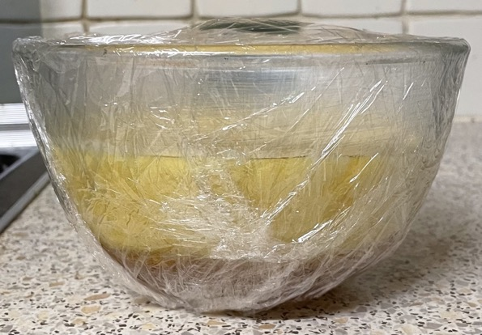

Lemon treacle sponge
Bowl
- Grease 1100ml Pyrex bowl with 10g butter
- Add
Flour
- Measure out
- 125g self-raising flour sieved
- ¼ tsp salt
Pudding
- Cream together with wooden spoon
- 125g unsalted butter very soft
- 125g golden caster sugar
- zest 1 lemon
- Beat in
- Beat in 1 tbsp flour
- Beat in
- Beat in remaining flour 1 tbsp at a time
- Beat in
- Gently pour the batter into the bowl with the syrup so they do not mix
- Tightly double wrap the entire bowl with cling film
- Cook in microwave at either
- 750W for 6:00 mins
- 600W for 7:30 mins
- Leave to stand for 2 mins
- Remove cling film
- Place plate over bowl and flip
- Shake till pudding drops out
Notes
Pics
